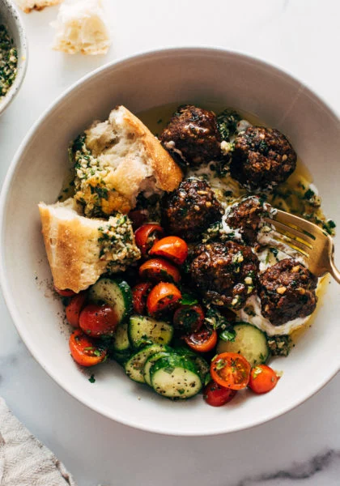
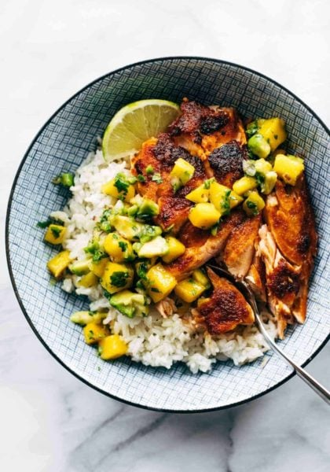
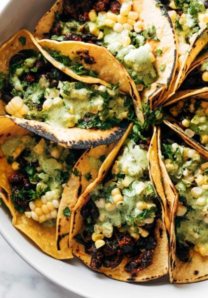

HEALTHY

MOST POPULAR

BOWLS

VEGETARIAN
HEALTHY
MOST POPULAR
BOWLS
VEGETARIAN

QUICK AND EASY
DINNER

VEGETARIAN

HEALTHY

INSTANT POT
VEGAN

MEAL PREP
SOUPS
SALADS
Brussels Sprouts with
Gochujang Butter
Scallion Pancake with Eggs
Homemade Alfredo Sauce
Sticky Gochujang Tofu with
Herbs and Peanuts